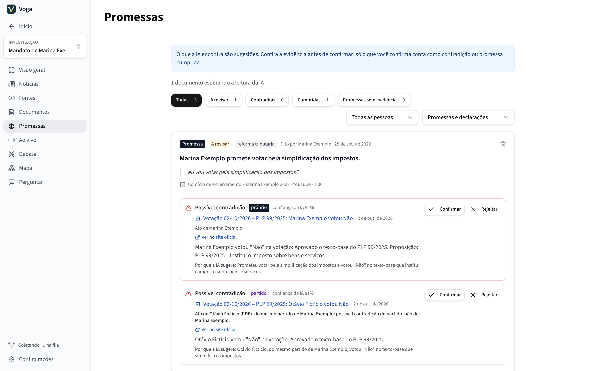
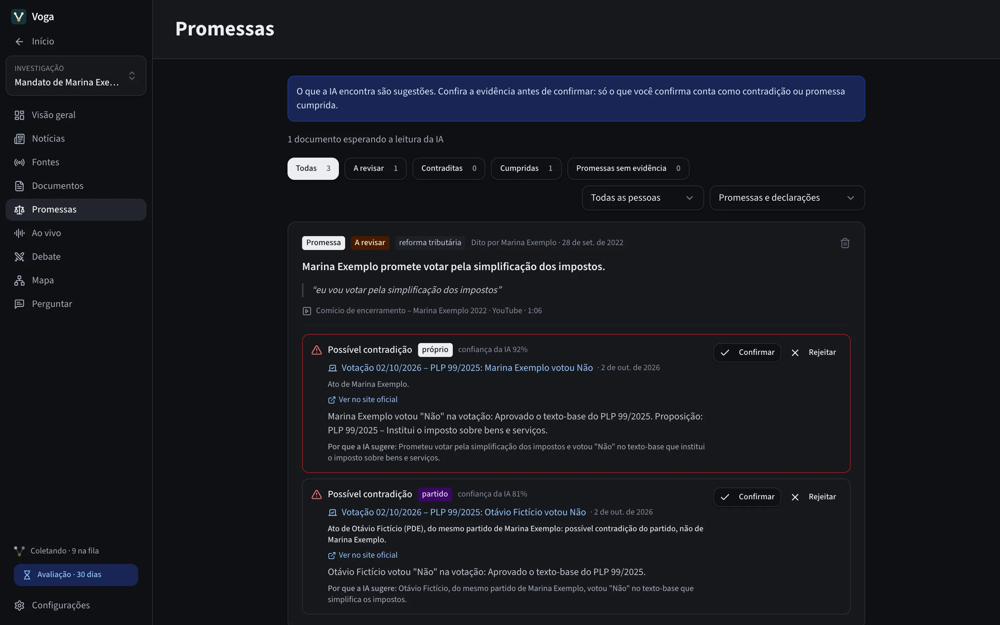
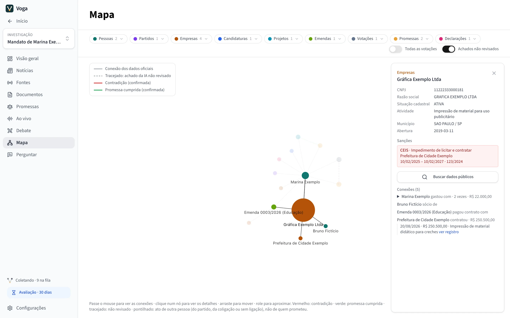
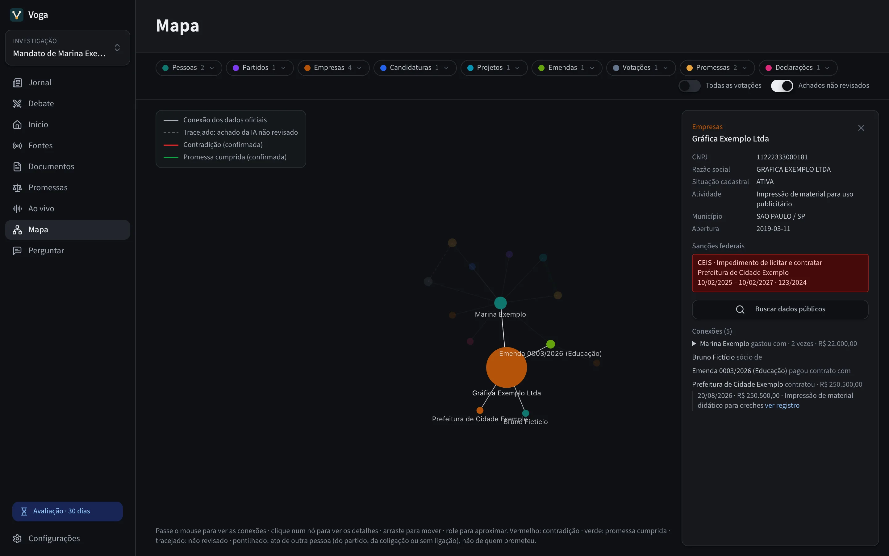
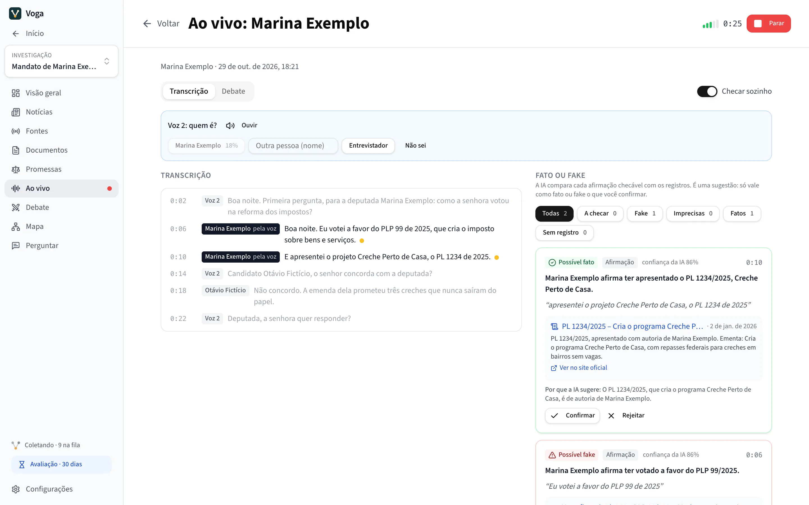
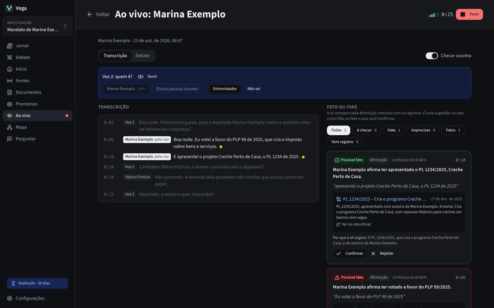

O que o político prometeu, ao lado do que ele fez.
O Voga junta discursos, entrevistas, vídeos, notícias e os dados oficiais da Câmara, do Senado e do TSE sobre quem você acompanha. A IA aponta onde uma promessa foi cumprida ou contradita, sempre com o registro ao lado, e só conta o que você confirmar.
“eu vou votar pela simplificação dos impostos”
Votação do texto-base do PLP 99/2025, que institui o imposto sobre bens e serviços: Marina Exemplo votou Não.
Possível contradição Ato da própria deputada · confiança da IA 92%
Fica como sugestão até você ler a evidência e confirmar ou rejeitar.
Ele lê o que o político deixa registrado
Você diz quem acompanhar e os nomes pelos quais a pessoa é conhecida. O Voga busca notícias e vídeos sobre ela, e você vincula os registros oficiais depois de conferir que é a mesma pessoa, porque há homônimos. Daí em diante, ele confere cada fonte sozinho, no ritmo dela.
- Câmara dos Deputados
- Votações nominais, discursos com a transcrição completa, projetos apresentados e os gastos da cota parlamentar, por fornecedor.
- Senado Federal
- Votações, inclusive as secretas e as ausências, projetos e discursos.
- TSE
- Candidaturas, coligação, resultado, bens declarados e a proposta de governo registrada.
- Portal da Transparência e Transferegov
- Cada emenda parlamentar, quem recebeu o dinheiro e as emendas Pix.
- PNCP
- Licitações e contratos da prefeitura de um prefeito que você vincular.
- ALESP
- Projetos e gastos de gabinete dos deputados estaduais de São Paulo.
- Diários oficiais
- Os trechos que citam a pessoa nos diários de centenas de prefeituras, pelo Querido Diário.
- Notícias, vídeos e redes
- Busca de notícias, legendas de vídeos do YouTube com o tempo de cada fala, sites, feeds RSS e perfis no Bluesky e no Mastodon.
Ao coletar, o Voga se identifica, segue o robots.txt de cada site, espera pelo menos 2 segundos entre pedidos ao mesmo site e não busca de novo o que já guardou.
Cada promessa com as palavras exatas e a prova ao lado
A IA lê discursos, vídeos, notícias e planos de governo e anota cada promessa e declaração, com o trecho exato e o link para o momento em que foi dita. Depois procura nas votações, nos projetos e nos gastos o que cumpre ou contradiz cada uma.
- Diz de quem é o ato: da própria pessoa, de alguém do mesmo partido ou de um partido da coligação. Só o ato da própria pessoa conta contra ela.
- Votações de procedimento, como requerimentos e destaques, não valem como prova.
- O que a IA encontra chega como sugestão, com o motivo e a confiança. Só vira contradição ou promessa cumprida o que você confirma, e o que você rejeita não volta.


Quem pagou quem, num mapa
O Mapa liga pessoas, partidos, projetos, votações, emendas, prefeituras e empresas. Cada empresa ganha o cadastro da Receita, os sócios e as sanções federais do CEIS e do CNEP, conferidas de novo todo dia. Cada ligação abre o registro oficial que a comprova.


Fato ou fake enquanto o candidato fala
Num debate, numa entrevista ou num comício, o Voga transcreve a fala neste computador, separa as vozes e compara cada afirmação checável com os registros. O cartão mostra o trecho, o registro que confirma ou desmente e o motivo.
- Possível fato, possível fake, possivelmente impreciso ou sem registro. Sem um registro citado, a IA não dá veredito.
- Na tela Debate, cada debatedor tem o seu painel, com as respostas numeradas pelas perguntas do entrevistador.
- Reconhecer vozes usa dado biométrico: só com o seu consentimento, fica neste computador, e desligar apaga as vozes aprendidas.


Também no Voga
Jornal
As notícias, vídeos e postagens de todas as investigações, por dia ou pelas mais relevantes da semana. Mais disso e Menos disso ensinam o que importa para você.
Perguntar
Respostas só com o que foi coletado, cada afirmação ligada à fonte e ao minuto do vídeo. Quando nada responde, ele diz que não encontrou.
Sugestões de busca
Uma vez por dia, a IA sugere buscas para as promessas ainda sem registro. Só rodam as que você aprovar.
Interesses
Além de política, qualquer assunto: um tratamento, uma tecnologia, um mercado, com notícias e vídeos ordenados pelo que tem a ver com ele.
O que fica no seu computador e o que sai dele
O Voga não tem servidor. O que ele coleta, o que a IA encontra e o que você revisa ficam num banco de dados na pasta do app, neste computador. Sai dele só o que está na tabela.
| Para onde | O que vai | Quando |
|---|---|---|
| Os sites e serviços das suas fontes | O pedido de cada página ou registro, com o Voga identificado. Câmara, Senado, TSE, Portal da Transparência, PNCP, ALESP, Querido Diário e os sites e feeds que você adicionar. | Quando cada fonte roda |
| Bing Notícias e YouTube | Os nomes e temas que você acompanha. | Nas buscas de notícias e de vídeos |
| minhareceita.org | O CNPJ de cada empresa do Mapa. | Quando uma empresa aparece ou você pede os dados |
| Hugging Face e GitHub | Nada seu: só o download dos modelos de IA e do yt-dlp, que lê os vídeos. | Ao baixar cada modelo; o yt-dlp, uma vez por semana |
| GitHub | A consulta por versão nova do Voga. | Ao abrir o app |
| A IA que você conectar | O texto que ela lê e as suas perguntas. Nas sessões ao vivo, o áudio, se a transcrição for dela. | Só se você conectar uma |
| Brave Search ou o seu SearXNG | As buscas na web. | Só se você configurar |
A chave de licença é conferida neste computador, sem consulta a servidor.
Instalar
-
Baixe o Voga
Um arquivo .dmg para Mac com Apple Silicon (M1 ou mais novo).
Baixar para Mac -
Arraste para Aplicativos
Abra o arquivo baixado e arraste o Voga para a pasta Aplicativos.
-
Abra pela primeira vez
O Voga ainda não é autenticado pela Apple, então o macOS avisa que não consegue verificá-lo. Clique em OK, abra Ajustes do Sistema › Privacidade e Segurança e, perto do fim da página, clique em Abrir Mesmo Assim. Só é preciso na primeira vez.
Se preferir o Terminal:
xattr -dr com.apple.quarantine /Applications/Voga.app -
Escolha a IA
Na tela inicial, baixe os modelos que rodam neste computador (de 1,8 a 3,2 GB, conforme a memória) ou conecte a IA que você já usa: OpenAI, Google Gemini, Claude, Groq, DeepSeek, OpenRouter ou um servidor compatível com OpenAI. Com menos de 8 GB de memória, o Voga recomenda conectar uma.
Perguntas
- O Voga diz quem está mentindo?
- Não. Ele mostra uma promessa ao lado do registro que pode cumpri-la ou contradizê-la, com o motivo, e marca como sugestão. Contradição é o que você confirma depois de ler a evidência.
- Preciso pagar por uma IA?
- Não. Os modelos integrados rodam neste computador. Conectar uma IA externa é opcional, e o provedor pode cobrar pelo uso.
- As pessoas das telas são reais?
- Não. As telas são da demonstração do Voga, com pessoas, partidos, empresas e veículos fictícios.
- O código do Voga é aberto?
- Ainda não. O repositório no GitHub guarda este site e os instaladores; o código do app fica fechado por enquanto.
- Tem versão para Windows ou Linux?
- Ainda não. Por enquanto, só para Mac com Apple Silicon.